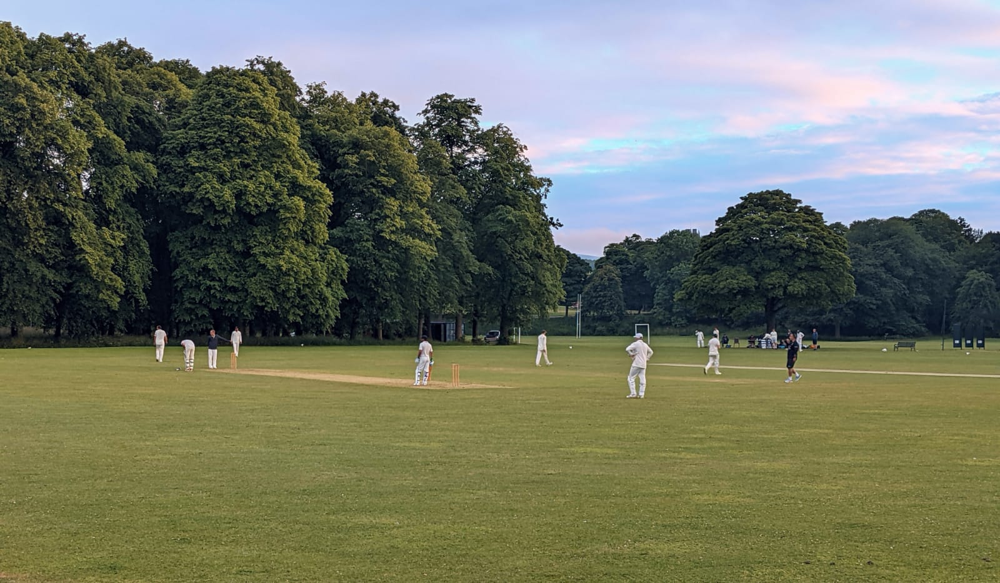

Most cricket clubs across Scotland, and indeed the cricket-playing world, have stalwarts, figures who make cricket clubs what they are – men and women who have been part of the furniture for decades. They make up the very fabric of their club, lending advice, supportive or not, to future generations.
Few however will have made as big a contribution as Edinburgh South’s (previously Mitre) Bill Polson. Now 80, Bill has been involved with the club in every imaginable capacity: President, secretary, captain, coach, umpire, and now youth convenor and scorer.
Jim Brims, ESCC’s current President, began playing for Mitre in 1977 and knew Bill long before then. Jim says: “I would say unequivocally that without Bill there would not be a club today. Going back over the years, anyone [that has been] involved think of him as ‘Mr Mitre’.”

How a chance sighting and tales of Bradman started a cricketing obsession:
Bill’s lifelong love of cricket began almost by chance in the summer of 1948, when both a family walk along the leafy Grange area of Edinburgh, and the success of the touring Australians in England sparked an interest.
Bill remembers: “I was out with my parents and we passed the Carlton CC ground – I was intrigued by this game which appeared to be played by men halfway up a hill. Around the same time, a cousin of mine who’d been stationed in Australia during the war married an Australian girl. I was hearing dispatches on the radio about Bradman, and wondering why this country so far away which had provided a wife for my cousin was quite so good at cricket.”
Bill began going to watch Carlton regularly, and his memories of that side are crystal clear – Scottish cricketers who evidently left a lasting imprint on an impressionable mind. “Carlton had an opening bowling attack, Tom Sommerville, who was a music teacher, and Ian Scott, who played piano in a dance band. They took a lot of wickets – at least one of them would take five wickets, and some weeks they both would – they were my early heroes.” His eyes also lit up when describing Carlton’s opening batsmen, James Aitchison and Bill Ellis, both Scotland internationals. Aitchison was undoubtedly the prominent Scottish batsman of the post-war period, scoring 56 hundreds in club cricket for Grange, Carlton and Kilmarnock, in addition to scoring 3,669 runs for Scotland.
A playing career that spanned seven decades:
"I remember waving the trophy around in a chip shop in Carrick Knowe"
Bill first played for Carlton’s second XI at the age of 14, but after a few seasons found himself regarded as more of a scorer than a player and felt the need to move on. Bill started playing for Mitre, then a nomadic public parks side, in 1957, and retired more than half a century later in 2014, only when forcefully told to by both his family and doctor.
Despite, by his own admission, not being the greatest cricketer, he took well over 500 wickets and scored nearly 2,500 runs for Mitre and Edinburgh South. When asked about specific moments that stood out, he did not hesitate: “The big personal one was when I batted for around 30 overs in a game to ensure we avoided relegation. That was in 1979 – our first season in the East of Scotland League Division 4. The game for Mitre as a club would be winning the Parks Trophy final in 1981, which was played in the rain at Corstorphine – I remember waving the trophy around in a chip shop in Carrick Knowe!”
Inspiring future generations:
As well as guiding Mitre and South through various peaks and troughs in all his roles over the years, Bill also found time to be the junior coaching convenor for ESCA from 1989 until just over four years ago. Not only has he helped develop talent at his own cricket club, he shared his love of the game with young cricketers across Scotland. “I’ve seen all sorts of people come through that have gone on to greater things”, he says. “Ally Evans playing for Scotland would be a good example.”
Brushing shoulders with the great and the good:
Furthermore, Bill has found time to watch and support the Scotland national team across the country in his time, but surely the most memorable experience came in 1997 when he travelled to Malaysia. Competing in the ICC trophy, Scotland qualified for the ’99 World Cup in England, after beating Ireland in the third-place play-off, and the additional attention on Scotland brought an unexpected opportunity.
“Keith Graham, the BBC correspondent got busier and busier as the tournament went on and Scotland began to do well”, Bill recalls. “He’d been spotting in the Sky box on Scotland players, but he got so busy that he deputised me to go and say ‘that’s Kevin Thomson or Mike Smith’ – I was sat with folk like Ian Smith and Harsha Bhogle, who were both extremely nice.”
Most stalwarts are known within their own club, content to pass judgement from the boundary and relive former glories. Few remain actively involved in the running of their own club, and so for Bill to still do what he does not just for Edinburgh South, but also for ESCA is testament to the man. Bill Polson has already played a fine innings, but it is far from over.